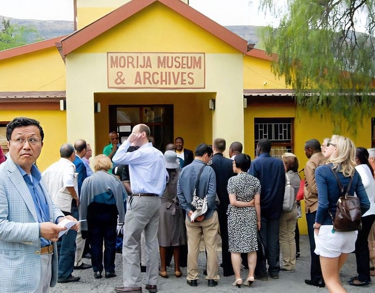

The Morija Arts & Cultural Festival was established in 1999 to celebrate the rich cultural heritage of the Basotho people. The festival was created to promote arts, music, literature and traditional culture while also encouraging tourism development in Lesotho.
Over the years the event has grown into one of the most important cultural festivals in the country. Artists, musicians, writers and performers from different regions participate in the event, making it a major attraction for both local and international visitors.
The festival plays an important role in promoting cultural tourism. It encourages visitors to experience traditional Basotho music, dance, crafts and cuisine. Events like this help strengthen the tourism industry by attracting tourists who are interested in culture and heritage.
